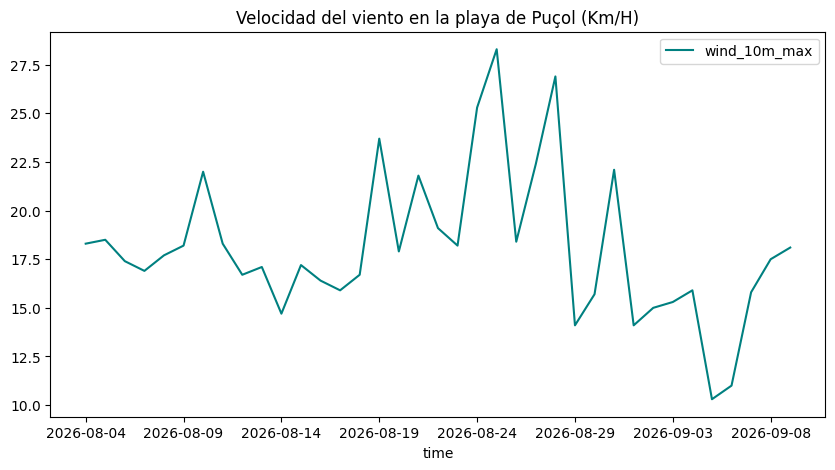
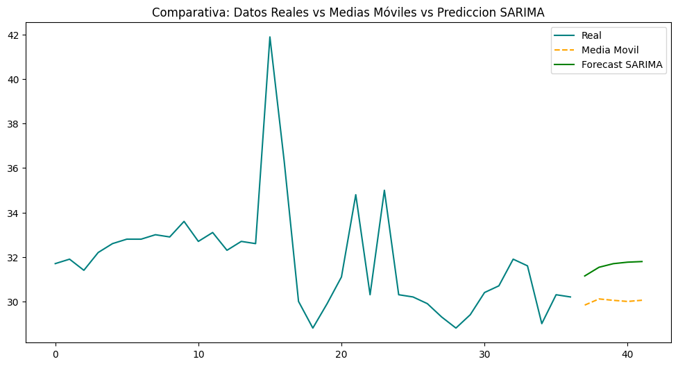

import pandas as pd
import pmdarima as pm
import matplotlib.pyplot as plt
import requests
import json
from datetime import datetime
import os1. Introducción y Objetivos del Ejercicio
El análisis de series temporales (Time Series Forecasting) es fundamental para anticipar patrones climáticos, consumo energético y demanda operativa.
En este proyecto práctico implemento un flujo integral (end-to-end) para la predicción de temperaturas máximas:
Extracción automatizada de datos: Consumo de la API REST pública de Open-Meteo para la zona costera de Puçol (Valencia) de los últimos 30 días.
Ingesta y estructuración: Procesamiento del payload en JSON a DataFrames de
pandas.Análisis Exploratorio (EDA): Detección de rangos térmicos y visualización de tendencias de viento.
Forecasting comparativo (5 días vista):
Modelo heurístico/baseline mediante Medias Móviles (Moving Averages).
Modelado estadístico adaptativo mediante ARIMA/SARIMA utilizando búsqueda automática de hiperparámetros (
pmdarima.auto_arima).
2. Preparación del Entorno
Instalamos y cargamos las librerías necesarias. Destaca el uso de requests para las peticiones HTTP y pmdarima para el ajuste algorítmico de parámetros \((p, d, q)\) de series temporales.
3. Extracción de Datos Vía API REST
Conectamos con la API meteorológica de Open-Meteo, parametrizando las coordenadas geográficas de la playa de Puçol (lat: 39.61, lon: -0.26), la zona horaria peninsular y un histórico de 30 días retrospectivos.
Code
response = requests.get("https://api.open-meteo.com/v1/forecast?latitude=39.61&longitude=-0.26&daily=temperature_2m_max,temperature_2m_min,wind_speed_10m_max,precipitation_sum&timezone=Europe%2FMadrid&past_days=30")
if response.status_code == 200:
data_json = response.json()
data_json4. Transformación de JSON a Pandas DataFrame
El endpoint devuelve las métricas en un diccionario anidado bajo la clave daily. Lo aplanamos en un DataFrame tabular estructurado para su posterior análisis.
datos_diarios = data_json['daily']
df = pd.DataFrame(datos_diarios)
df.head()| time | temperature_2m_max | temperature_2m_min | wind_speed_10m_max | precipitation_sum | |
|---|---|---|---|---|---|
| 0 | 2026-08-04 | 31.7 | 23.1 | 18.3 | 0.0 |
| 1 | 2026-08-05 | 31.9 | 23.8 | 18.5 | 0.0 |
| 2 | 2026-08-06 | 31.4 | 24.8 | 17.4 | 0.0 |
| 3 | 2026-08-07 | 32.2 | 24.1 | 16.9 | 0.0 |
| 4 | 2026-08-08 | 32.6 | 24.0 | 17.7 | 0.0 |
5. Análisis Exploratorio y Métricas Clave
Calculamos las medias del periodo para obtener una referencia base del comportamiento climático y trazamos la evolución de las rachas de viento.
##Seleccionamos las 4 variables y sacamos la media
df.rename(columns = {'temperature_2m_max':'temp_2m_max', 'temperature_2m_min':'temp_2m_min', 'wind_speed_10m_max':'wind_10m_max', 'precipitation_sum':'precip_sum'}, inplace=True)
medias = df[['temp_2m_max', 'temp_2m_min', 'wind_10m_max', 'precip_sum']].mean().round(2)
print("------------------------------")
print()
print(f"Temperatura Maxima 2m: {medias['temp_2m_max']}")
print()
print(f"Temperatura Minima 2m: {medias['temp_2m_min']}")
print()
print(f"Velocidad Maxima del Viento 10m: {medias['wind_10m_max']}")
print()
print(f"Suma de Precipitaciones: {medias['precip_sum']}")
print("------------------------------")
##Usamos el PLOT propio de Pandas para sacar una gráfica de la velocidad del tiempo
df.plot(
x = "time",
y = "wind_10m_max",
kind = "line",
title = "Velocidad del viento en la playa de Puçol (Km/H)",
color = "teal",
figsize = (10, 5)
)
------------------------------
Temperatura Maxima 2m: 31.85
Temperatura Minima 2m: 23.29
Velocidad Maxima del Viento 10m: 18.08
Suma de Precipitaciones: 0.03
------------------------------
Observación del EDA: El registro muestra una temperatura máxima promedio de ~31.8°C y eventos puntuales de viento de hasta 28 km/h[cite: 1]. Existe una anomalía térmica visible en torno al día 19 de agosto con picos superiores a 40°C[cite: 1], un factor que pondrá a prueba la robustez de los modelos predictivos.
6. Modelado Predictivo: Medias Móviles (Baseline)
Implementamos un pronóstico autorregresivo simple mediante una media móvil con ventana deslizante (\(k=3\)) para proyectar los siguientes 5 periodos[cite: 1]. En cada iteración, la predicción calculada se reinyecta en el histórico para estimar el siguiente paso[cite: 1].
#Medias Moviles con Pandas con ventana de 3 días y predicción de 5
n_periods = 5
k = 3
#Hacemos una copia de los datos reales en forma de lista
historial_para_ma = df['temp_2m_max'].tolist()
predicciones_ma = []
#Bucle iterativo para el forecast
for i in range(n_periods):
#Seleccionamos los últimos k valores
ventana = historial_para_ma[-k:]
#Calculamos la media de esa ventana
siguiente_pred = sum(ventana) / k
#Lo guardamos en predicciones_ma
predicciones_ma.append(siguiente_pred)
#Y se añade al historial para usarlo en la siguiente vuelta
historial_para_ma.append(siguiente_pred)
7. Modelado Estadístico Avanzado: Auto-ARIMA
A diferencia de las medias móviles simples, el enfoque ARIMA (AutoRegressive Integrated Moving Average) modela la autocorrelación de la serie, estacionariza los datos y captura componentes estacionales (\(m=7\) días)[cite: 1].
Utilizamos el algoritmo stepwise de pmdarima para minimizar el criterio de información de Akaike (AIC), convergiendo hacia la mejor combinación de parámetros \((p,d,q)(P,D,Q)_m\)[cite: 1].
#Forecasting con ARIMA
#Ajuste automatico del modelo como el auto.arima() de R
modelo_sarima = pm.auto_arima(
df['temp_2m_max'],
seasonal=True,
m=7,
stepwise=True,
trace=True
)
#Guardamos las predicciones en una predicción de 5 días
predicciones = modelo_sarima.predict(n_periods=5)Performing stepwise search to minimize aic
ARIMA(2,0,2)(1,0,1)[7] intercept : AIC=179.576, Time=0.30 sec
ARIMA(0,0,0)(0,0,0)[7] intercept : AIC=174.687, Time=0.01 sec
ARIMA(1,0,0)(1,0,0)[7] intercept : AIC=171.988, Time=0.15 sec
ARIMA(0,0,1)(0,0,1)[7] intercept : AIC=173.015, Time=0.03 sec
ARIMA(0,0,0)(0,0,0)[7] : AIC=363.330, Time=0.00 sec
ARIMA(1,0,0)(0,0,0)[7] intercept : AIC=170.002, Time=0.01 sec
ARIMA(1,0,0)(0,0,1)[7] intercept : AIC=171.988, Time=0.05 sec
ARIMA(1,0,0)(1,0,1)[7] intercept : AIC=173.926, Time=0.18 sec
ARIMA(2,0,0)(0,0,0)[7] intercept : AIC=171.950, Time=0.02 sec
ARIMA(1,0,1)(0,0,0)[7] intercept : AIC=171.966, Time=0.02 sec
ARIMA(0,0,1)(0,0,0)[7] intercept : AIC=171.023, Time=0.01 sec
ARIMA(2,0,1)(0,0,0)[7] intercept : AIC=173.985, Time=0.09 sec
ARIMA(1,0,0)(0,0,0)[7] : AIC=inf, Time=0.01 sec
Best model: ARIMA(1,0,0)(0,0,0)[7] intercept
Total fit time: 0.932 seconds8. Evaluación y Comparativa de Predicciones
Comparamos la proyección de ambos métodos a 5 días vista respecto al histórico real de temperaturas máximas registradas[cite: 1].
# Gráfico con las nuevas predicciones
#Cremos un índice numérico que continúe justo cuando acaba el DF
ultimo_indice = df.index[-1]
indice_futuro = range(ultimo_indice + 1, ultimo_indice + 1 + n_periods)
#Convertimos la lista de predicciones en una Serie de Pandas con ese índice
serie_forecast_ma = pd.Series(predicciones_ma, index=indice_futuro)
#Se prepara primero la figura
plt.figure(figsize=(12, 6))
#Se añaden las capas. Primero los datos reales
plt.plot(df.index, df['temp_2m_max'], label = 'Real', color="teal")
#Ahora Medias Moviles
plt.plot(serie_forecast_ma.index, serie_forecast_ma, label = "Media Movil", color='orange', linestyle='--')
#Ahora Predicciones Sarima
plt.plot(predicciones.index, predicciones, label="Forecast SARIMA", color="green")
plt.title('Comparativa: Datos Reales vs Medias Móviles vs Prediccion SARIMA')
plt.legend()
plt.show()
Conclusiones y Aprendizajes
Suavizado de medias móviles: El enfoque MA reacciona con lentitud a las tendencias recientes y tiende a estabilizarse rápido en un valor plano al propagar sus propias predicciones[cite: 1].
Comportamiento de ARIMA: El modelo autorregresivo identificado incorpora mejor la inercia reciente de la serie sin verse distorsionado de forma permanente por picos térmicos aislados[cite: 1].
Siguientes pasos: Incorporar variables exógenas mediante modelos SARIMAX (p. ej. radiación solar o viento cruzado) o explorar redes recurrentes (LSTM) para horizontes de predicción más extensos.